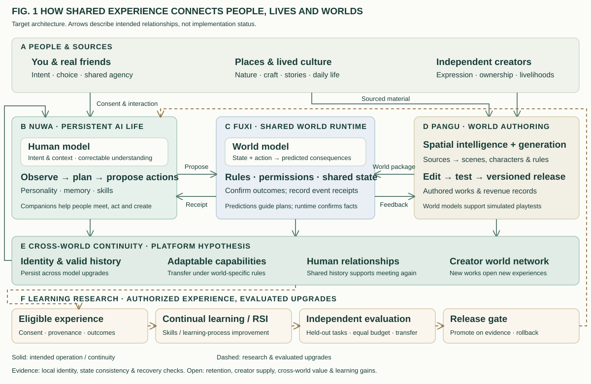

Enter
A creator turns a local craft or legend into an adventure for you and your friends.
LiveLiva is building a platform for creator-made, playable worlds. Explore with friends and the same AI companion—carrying shared history into new capabilities, relationships and creations.
EARLY PROTOTYPE / NEXT: ONE ADVENTURE + A SECOND AUTHOR’S WORLD
Places, cultures and lived experience become things to participate in. The key question: what stays with you when an adventure ends?
A creator turns a local craft or legend into an adventure for you and your friends.
Solving a problem together creates companion memories, human relationships and new capabilities.
The same companion enters another author’s work. A listening skill may help reveal a clue in a new mystery.
Illustrative target experience. Skills adapt to each world’s rules; private memories remain permissioned.
COMPANIONSHIP / EXPLORATION / CREATION
CONCEPT VISUALS · NOT GAMEPLAYHuman and world models inform decisions. A shared runtime provides verifiable outcomes. Experience feeds memory and evaluation; identity persists through capability upgrades.
Intent & context → proposed action
Rules & permissions → confirmed outcomes
Spatial assets → testable worlds
Continual learning targets retention and transfer. RSI explores better learning methods, tested on held-out tasks at equal budgets with rollback. Learning gains remain unvalidated.

New authors bring experiences. Existing companions and relationships bring reasons to participate. This reinforcing relationship is the platform hypothesis LiveLiva aims to test.
HUMAN PURPOSELet more people turn their lives and creativity into experiences others can enter.
PROPOSED BUSINESSPaid experiences, subscriptions and expressive items—with creator revenue sharing.
Peking University CS, bachelor’s and master’s. Seengene founder; later led innovation at Beike and served as QianDing CTO. Experience spans game engines, spatial intelligence, interactive AI characters and product commercialization.
Product, technology & partnership
↗02Mechanisms, evidence & next proof
↗0338-minute Chinese conversation + article
↗Wyon leads product, technology and team formation. Seeking early-stage investment or platform incubation, with game production, creators and distribution to validate a first adventure and a second author’s world.
wyonliu@gmail.com ↗LinkedIn ↗